01Front three-quarter (left)
Open in 3D


Follow the hood edge into the headlamp return and along the front fender. The steering angle and the studio lighting affect the apparent width of the near wheel.
Compare the Rapid Red model with 22 photographs of a Shelter Green 2024 Raptor R and an overhead photograph of a Rapid Red truck with a closed, three-panel tonneau. Choose Pairs for a side-by-side view, Wipe to slide between the images, or Shape to inspect model edges over the photograph. Each camera is an estimate. Interior trim and underbody details are approximate.
Follow the painted edge above the headlight, then back toward the wheel. On the previous model the hood lip dropped 26.9 mm below the top of the lens near the outer hood corner, and 4 painted fender pieces crossed each lens. The revised hood and fender follow the lamp opening on both sides. Each before-and-after pair uses the same camera and crop.
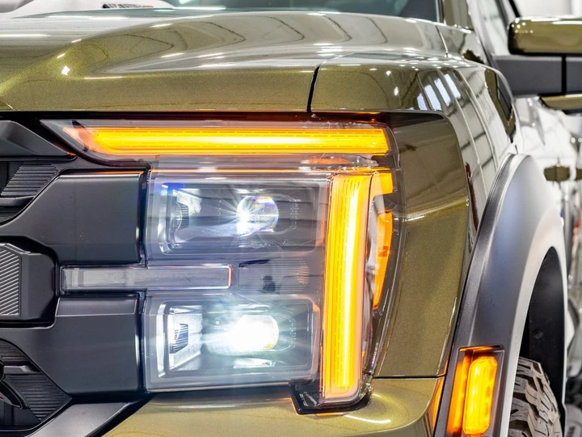
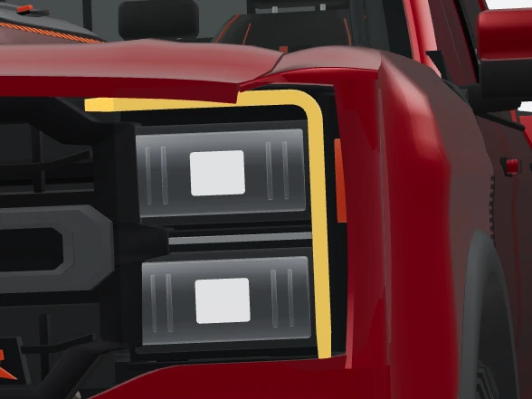
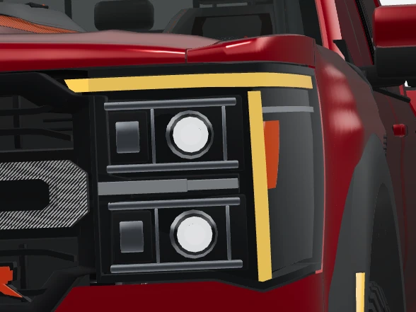
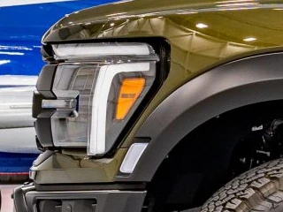
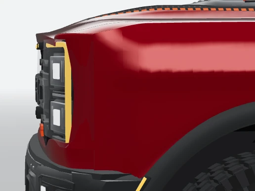
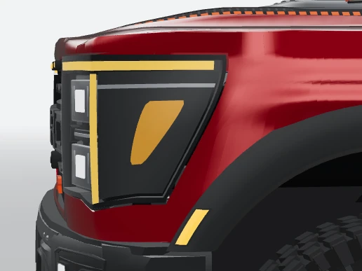
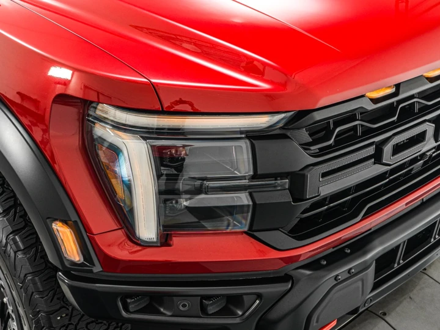
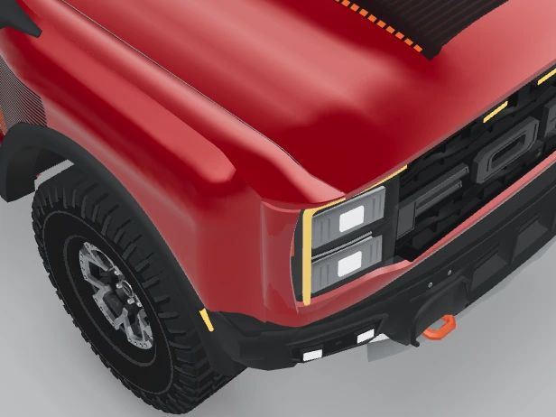
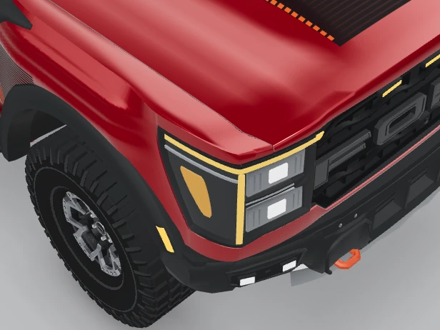
The exported hood clears the lens by 5.0 mm at each of 29 cross-sections per side. The painted panels clear both lenses and the grille frame. The forward part of the hood also cleared the fixed panels, lenses and grille at ten tested positions from closed to 48° open. The photographs establish the shape. The 5 mm gap is a modeling choice, and Ford’s production tolerance is unverified.
Inspect the headlight in 3D · Measurements and model hashes · Download the Blender measurement script
The lower edge of each bedside previously extended 254 mm forward of the bed rail. It now ends at the rail edge, leaving 30 mm to the rear cab wall. The front and middle skid plates now meet across a former 13.5 mm gap. All three closed tonneau panels are flush with the bed rails. The largest difference between their top surfaces and the rail crowns measures 0.02 mm in the exported mesh.

All eight dimensions below agree with Ford’s published 2024 Raptor R specifications to the nearest millimeter.
| Dimension | Ford | Previous model | Current model |
|---|---|---|---|
| Overall length | 5,908 | 5,901 | 5,908 |
| Wheelbase | 3,693 | 3,693 | 3,693 |
| Width without mirrors | 2,210 | 2,212 | 2,210 |
| Width with mirrors | 2,438 | 2,444 | 2,438 |
| Overall height | 2,047 | 2,074 | 2,047 |
| Front track | 1,887 | 1,887 | 1,887 |
| Rear track | 1,877 | 1,877 | 1,877 |
| Ground clearance | 333 | 325 | 333 |
Length and width use the outermost mesh vertices. Height and ground clearance are measured from the tire contact plane. Track and wheelbase use the four wheel centers. These checks measure the assembled exterior and axle positions. Individual panel contours are compared in the photographs below.
Ford technical specifications (PDF) · Measurements and model hashes · Download the Blender measurement script
Follow the hood edge into the headlamp return and along the front fender. The steering angle and the studio lighting affect the apparent width of the near wheel.


The painted shoulder curves back around the lamp. Compare the rolled skid-plate lip below the two recovery hooks.


Compare the width of the FORD letters, the stacked projectors and the bumper pockets. The skid plate narrows toward the engine below the front crossmember.
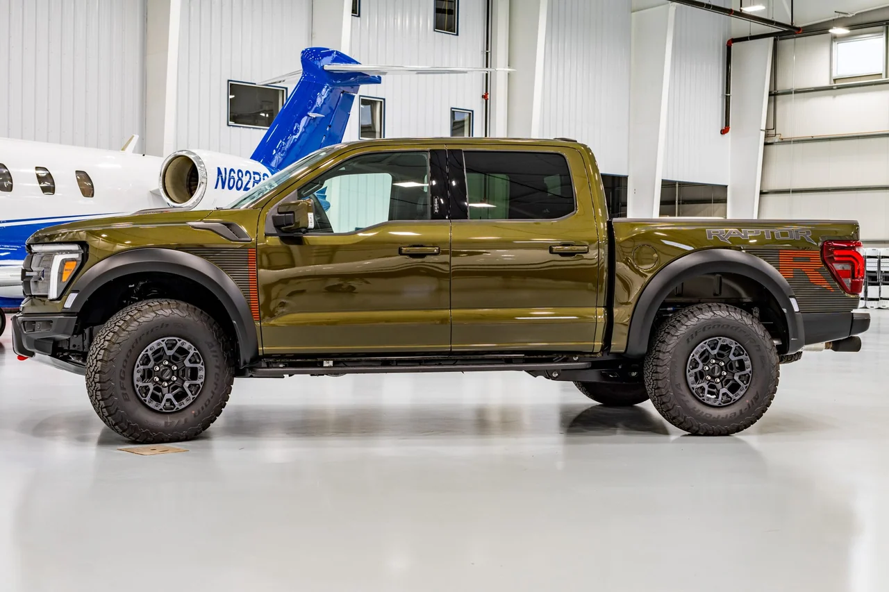

The rear edge of the front headlamp sweeps back toward the wheel arch. The fender now stops along that seam. Wheel and cab landmarks set the estimated camera angle.
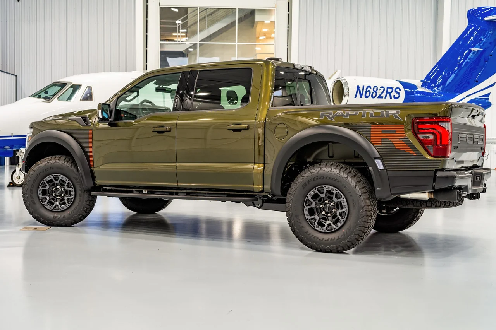

This rear three-quarter photograph shows the driver-side fuel door, the wheel arch and the lower rear cladding. The model also carries the hard tonneau.


Compare the return around the taillamp and the taper of the black cladding into the bumper. This Shelter Green reference has an uncovered bed.
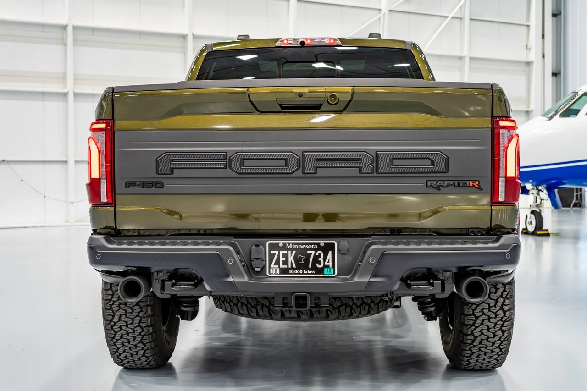

Use the tailgate and bumper corners to compare the width. The two exhaust outlets sit in the bumper recesses.


The hood is raised in both views. Compare the fender line and the separation between the cab and the bed.


The center wordmark spans 1.29 m. One shallow waved grille rail runs above it and another below it. The silver lip is directly behind the orange recovery loops.
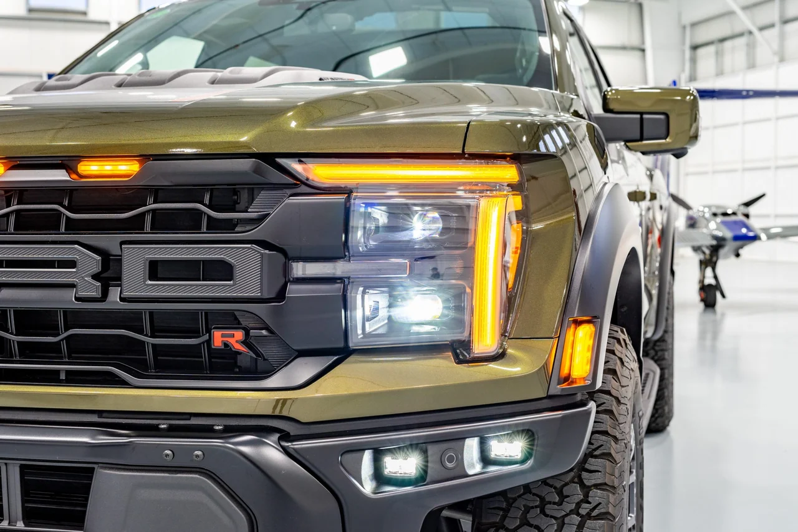

Follow the underside of the hood across the amber light and the fixed fender brow. The model has a 5 mm vertical gap above the lens along this part of the hood. The camera uses seven visible landmarks and has a root-mean-square projection error of 31 pixels in the 2048-pixel-wide photograph.
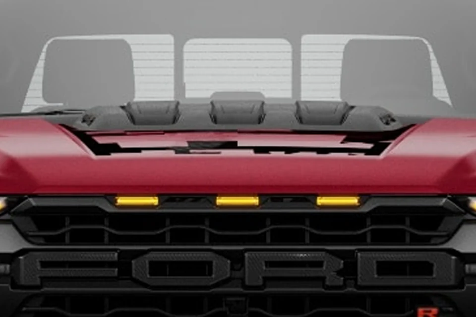

Use the extractor perimeter and the four raised pods to compare the hood. Small vents and surface finishes are approximated.
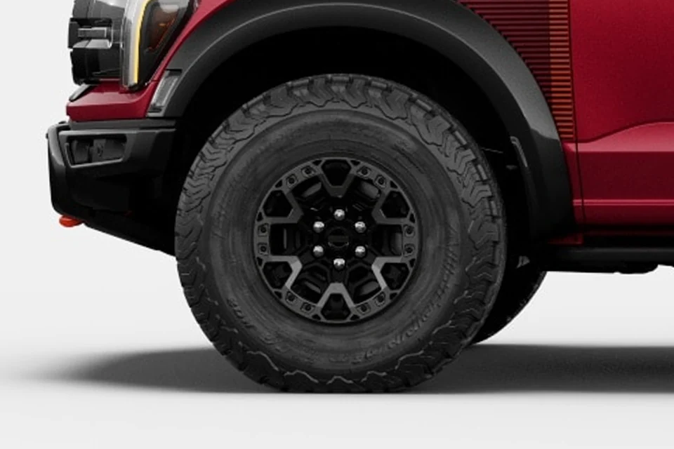

The reference uses a nominal 37-inch KO2 tire on a 17-inch rim. The mesh models the tire envelope and a repeating tread pattern.
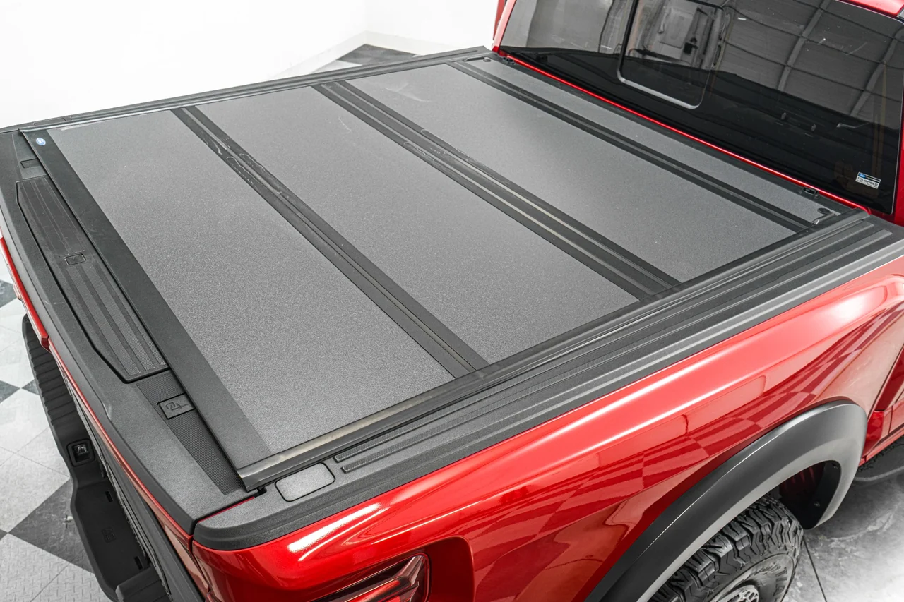

A Rapid Red 2024 Raptor R photographed by Marshall Goldman shows the narrow fixed strip at the cab, three coated panels and dark transverse hinges. The model follows their spacing with the cover latched.


The model shows the tailgate lowered and the cover folded onto its front section. The reference truck has an uncovered bed, so its full floor is visible.


Compare the position of the steering wheel, cluster and center screen. The showroom and studio casts and reflections differ.
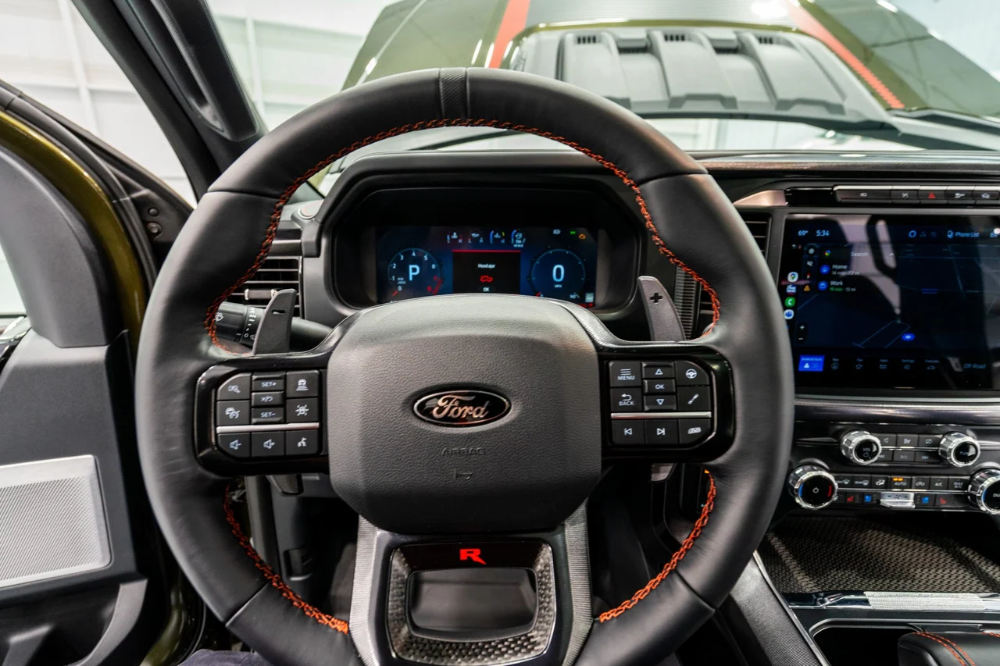

Use the wheel rim, center stripe and spokes to compare their placement against the instrument cluster.


Compare the vertical vents, screen surround and control rows. Dashboard controls and graphics are simplified.


The door is open for a view of the front seat bolsters, head restraints and upholstery.


The driver door is open. Compare the armrest, handle recess, speaker grille and storage pocket.


The model has the requested solid roof. The photographed vehicle has a moonroof. The rear bench and cabin opening can be compared here.
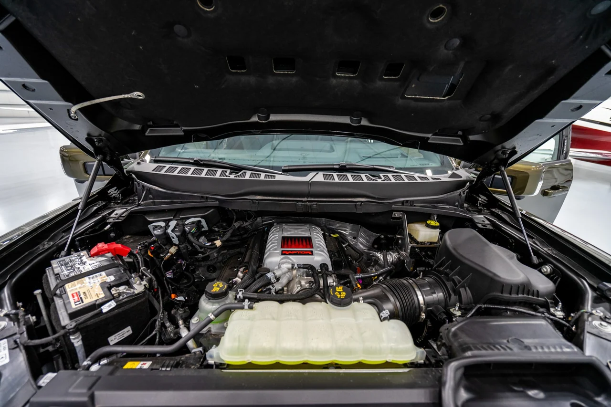

The open hood exposes the supercharger, intake and reservoir. The internal parts and hose routing are illustrative.
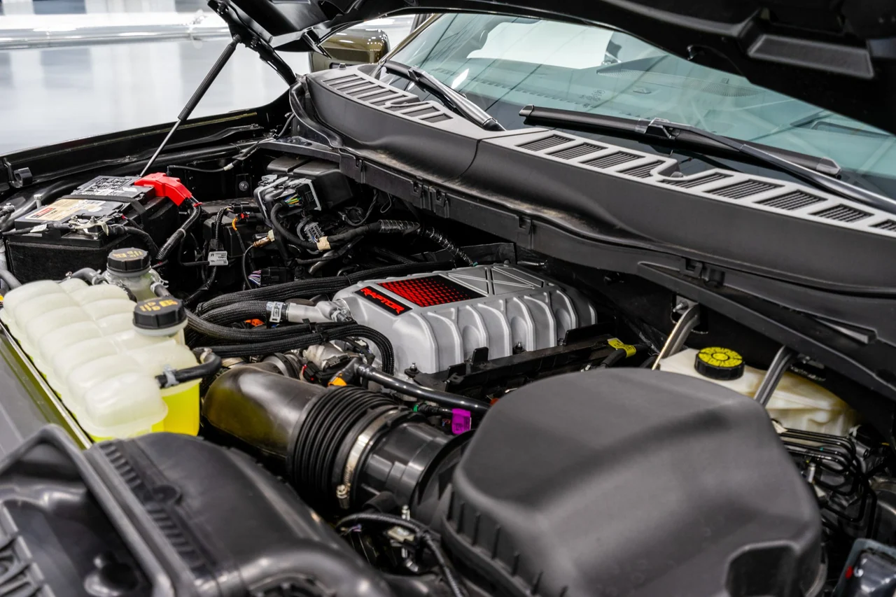

Compare the supercharger location and the intake route. This camera is an approximate match to the engine-bay photograph.


The front and middle guards now meet along one mounting edge. Compare the narrowing underside, stamped channels and lateral clearance to the suspension.